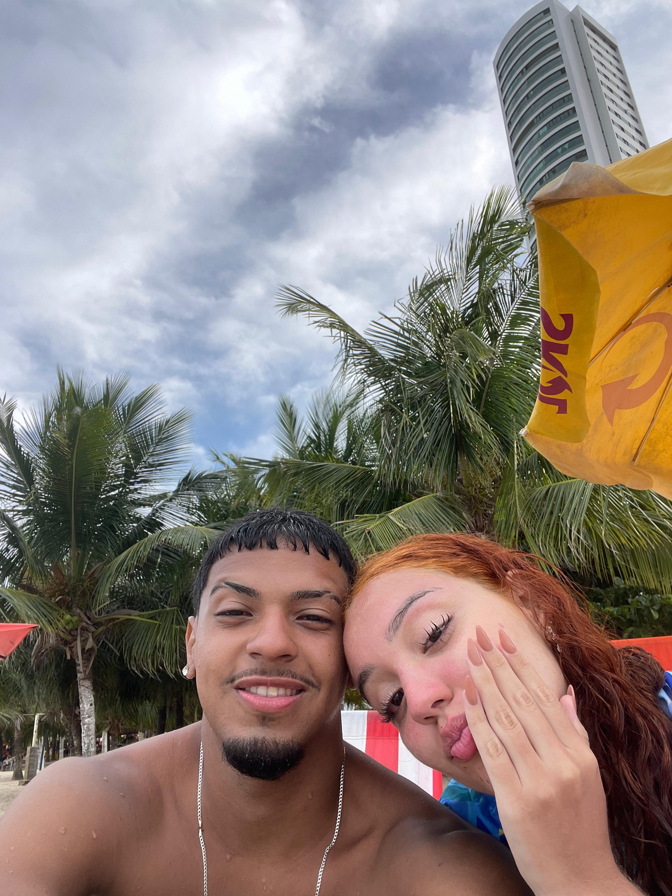
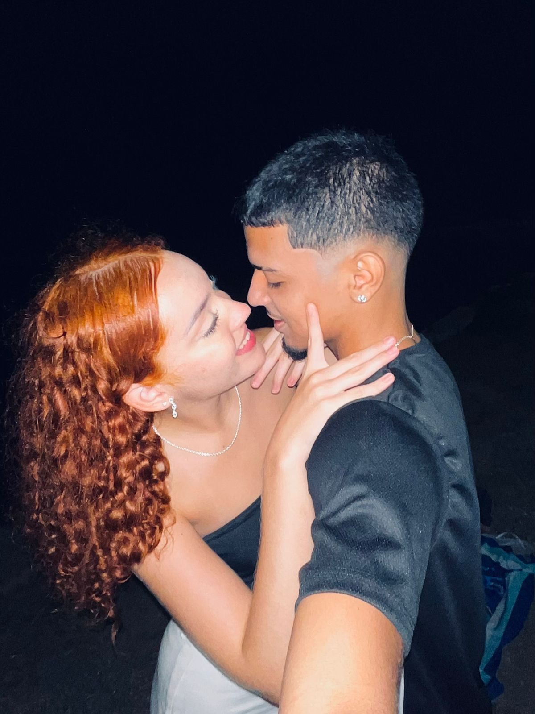
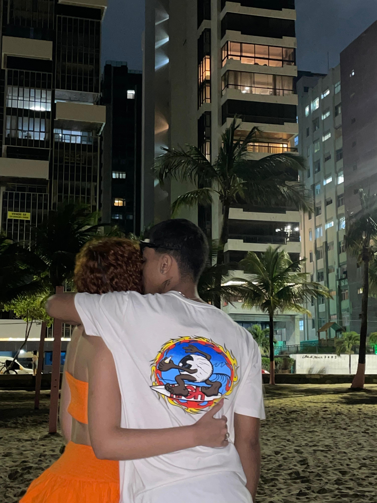

Espero que você goste... de verdade. desculpa se eu sumi um pouco, é que eu tava me dedicando a algo que queria muito fazer pra você. cada detalhe aqui tem um pedaço do que eu sinto, do que eu guardei no peito esse tempo todo.
o que eu mais queria era conseguir dizer o quanto eu te amo, o quanto você é especial pra mim. tipo… de um jeito que fizesse sentido, sabe? sem enrolação, só eu sendo eu, do jeito mais sincero possível. e mesmo com todas as falhas que eu tive, o que mais pesa hoje é ver o quanto você foi boa pra mim, o quanto me fez feliz, e eu só queria te mostrar que hoje eu enxergo tudo isso.

“Quando te vi pela primeira vez, já sabia que era diferente.”

“Se esse sorriso for pra mim, eu sou o cara que tem mais sorte no mundo.”

“Entre risadas e silêncios, você é meu lugar.”
“Mesmo no escuro, teu olhar me ilumina.”
“A gente combina feito o sol e o mar.”
E é por isso que hoje, faltando cinco dias pra gente completar dois meses juntos… eu me peguei pensando em tudo. não só nesses dois meses, mas nos quatro meses que a gente se conhece. olha quanta coisa já vivemos… quanto carinho, quantas conversas, quantas vezes a gente se olhou e sentiu que era ali. a gente criou uma estrada bonita juntos, cheia de intimidade, de momentos nossos. e eu não quero perder nada disso. não quero deixar essa história se apagar.
eu quero ser diferente. quero ser alguém melhor, e não por obrigação, mas porque eu vi que eu posso sim ser alguém que cuida, que ama sem ego, que respeita teu tempo, teu jeito, tua paz. eu sei que o ego já atrapalhou demais… aquele orgulho besta de não querer ouvir, de querer ter razão. e nisso eu perdi tempo, perdi detalhes, perdi partes suas que eram só carinho.
mas mesmo assim, você ficou. ficou e me mostrou o que era amor de verdade. me deu a caixinha linda, a xícara do homem-aranha, as fotinhas polaroid… parecia tudo tirado de um filme bonito, daqueles que a gente sente saudade só de lembrar. e no meio disso, o teu poema… que eu li de novo agora, com calma, com o coração aberto. e dessa vez, bateu como um soco e um abraço ao mesmo tempo.
eu me emocionei porque entendi o tamanho do amor que você teve por mim. e doeu, porque eu deixei escapar tanta coisa linda sem nem perceber. mas também me deu esperança… porque se você já viu algo bom em mim antes, talvez ainda exista algo aqui que valha a pena.
eu não quero prometer perfeição. só quero mostrar, com atitudes, que eu posso ser diferente. posso te ouvir, te cuidar, ser presente, rir contigo, andar do teu lado sem peso, sem drama, só sendo de verdade.
e quem sabe um dia, quando a gente tiver filhos, eu possa contar pra eles tudo isso. contar o quanto eu me dediquei pra te conquistar de novo, pra te mostrar o quanto você vale a pena. e o quanto eu lutei, porque eu sabia que amor de verdade assim não se encontra todo dia.
eu só espero que você possa acreditar, nem que seja um pouco, na minha mudança. porque eu sou humano, eu erro, mas eu tô disposto a tudo pra ser melhor pra você. e se existe alguém que merece minha melhor versão... essa pessoa é você.
ah, e no final dessa página... tem um vídeo. um que eu fiz com o coração, lembrando de tudo que a gente viveu e do quanto você foi especial em cada pedacinho disso tudo. se puder... clica e assiste até o fim. é só mais uma forma de te dizer: ainda te amo, e tô aqui.
E aqui está o vídeo que fiz e me dediquei com todo carinho, lembrando de tudo que vivemos. 📬